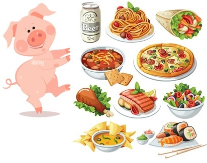

學習歷程專區
1.高雄鼓山學習歷程自述
https://www.kusjh.kh.edu.tw/side_content/709
2.高中生造假惹議！校方最重「學習歷程」這表現...8大疑惑一次看懂
https://tw.news.yahoo.com/%E9%AB%98%E4%B8%AD%E7%94%9F%E9%80%A0%E5%81%87%E6%83%B9%E8%AD%B0-%E6%A0%A1%E6%96%B9%E6%9C%80%E9%87%8D-%E5%AD%B8%E7%BF%92%E6%AD%B7%E7%A8%8B-%E9%80%99%E8%A1%A8%E7%8F%BE-8%E5%A4%A7%E7%96%91%E6%83%91-023400858.html
3.114甄選網站(委員會)
https://www.techadmi.edu.tw/comms.php?comid=comc01
4.統測網站
https://www.tcte.edu.tw
5.技高學生學習歷程檔案最後一哩路：關於「學習歷程備審資料」
https://flipedu.parenting.com.tw/article/009226
6.學習歷程準備：台大教授看備審真心建議，為何說不需要「優秀」？
https://www.gvm.com.tw/article/112231
7.【學習歷程】多元表現綜整心得 5大祕訣
https://www.unews.com.tw/News/Info/5587
8.【餐旅系】「想讀餐旅系？不能只是喜歡吃美食。」輔大餐旅系柯文華教授來分享 ➔ 餐旅系畢業生的職涯選擇 | 學習歷程檔案怎麼寫 ｜ 什麼學生適合念餐旅系
https://youtu.be/VJlHIuRP4Dg?si=KMVtcC_c52uD_nMr
